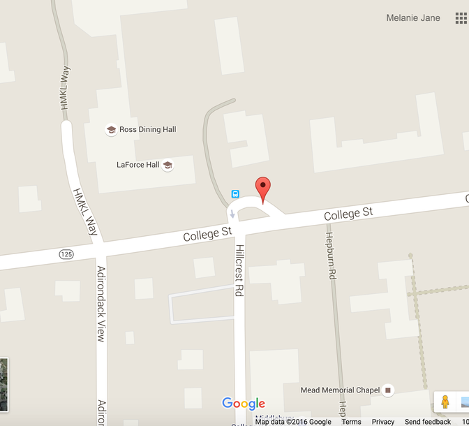

Less than 1 week of registration left! We still have room!! Sign ups are available online (button below - #210003 MIDDSTEAM) or in person at Middlebury's Town Offices (154 Creek Road)
Hi parents!! Please try to drop off your daughter at Adirondack Circle. Thanks to the office of the VP for Academic Affairs, we are able to host MIDDSTEAM at Middlebury College for 2 days! Please drop off your daughter around 8:50. We want to get the day started by 9. Here are photos of Adirondack Circle (we will have a large MIDDSTEAM sign as well)
This program is for middle school girls (5th grade-8th grade) who want to explore the different fields of Science, Technology, Engineering, Arts, and Math. The purpose of the program is to expose girls to different subjects early in their lives.
The program will go from 9 AM - 3 PM from April 18 to April 22, during the spring break. Each day will be a different letter of STEAM (so science on Monday, technology on Tuesday, engineering on Wednesday, arts on Thursday, and math on Friday) with 3 different workshops each day. Workshops will be led by different people in the Middlebury community (professors, students, etc) and range from dance to underwater robotics to coding! At the end of the day, the girls will participate in a team building activity and a reflection. We will be hosting an babysitting time from 3 - 4 and the girls will be doing a physical activity. More information can be found on the website, bit.ly/middsteam, it is currently under construction but will be updated over time!
Scholarships are available through Middlebury Parks & Recreation.
Feel free to contact Melanie Jane Pascual, the organizer of MIDDSTEAM, at mpascual@middlebury.edu
Last updated: April 11,2016
In middle school, 74% of girls express interest in Science, Technology, Engineering and Math (STEM), but when choosing a college major, just 0.4% of high school girls select computer science. There's a huge gender gap in STEAM fields, but we want to change that! This program will allow girls to be exposed to the various fields.
MJ, a Middlebury college freshman and co-founder of MIDDSTEAM, has been doing computer science outreach for almost 3 years and Terri, director of Middlebury's Town Rec Center and co-founder, has been in the recreation business for over 20 years! We selectively chose workshop leaders based on their interest and passion for different topics!
Parents/Guardians! MIDDSTEAM is a perfect way for your daughter to spend spring break. They will be learning about non-traditional school topics and do hands-on projects with leaders and each other. There is currently one more week left and we'd love to fill the class up. Register at the button above :)